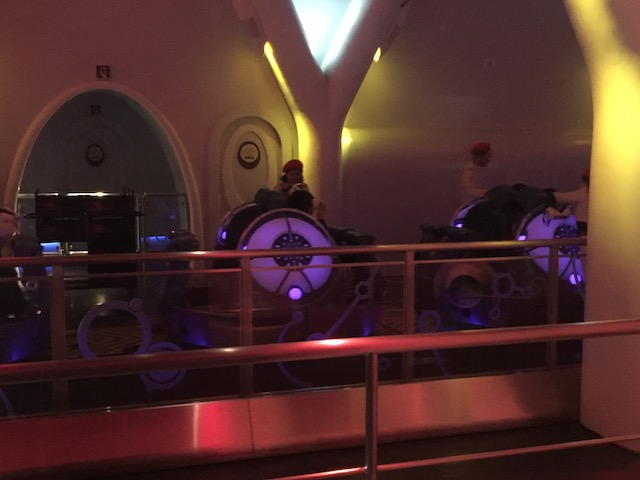

| |
Space Fatasy Review

We're here at Universal Studios Japan, where we'll be reviewing Space Fantasy. The park's spinning coaster. Now, Universal really likes to play with this coaster, and it's gone through several iterations. As when I was at the park, this wasn't Space Fantasy, it was Evangelion XR: 1.01. This was right in the middle of the VR Craze, where nearly EVERY park wanted to incorporate Virtual Reality into their coasters. So....this review is gonna be short since....A: I generally write short reviews for spinning coasters. B: I generally write short reviews for indoor coasters. This is an Indoor Spinning Coaster. So it already is at a disadvantage. But C: I rode this ride in a VR Program that they don't have anymore, have no idea what the layout is, and on top of that, the VR is based off an anime that I have never seen (Sorry Anime nerds, I don't watch). And it's all in a language that I don't speak, so that makes following along even harder. And it's a spinning coaster that wasn't spinning when I rode it. So...yeah. I was very dissapointed with the ride. I know this ride gets A LOT of praise as Space Fantasy. And....it seemed like it had a good layout. But again. Hard to tell since I couldn't tell what was going on as I was just staring at a VR screen, following an anime that I don't watch, and is all in Japanese, which I don't speak. And I can't find a POV of the VR program, so...I kind of forgot what was going on with the ride. I know it had a lot of twists and turns, which....I imagine got it spinning a lot as a spinning coaster. But it wasn't spinning for me. So....yeah. I got off the ride all confused. It was still fun, but after all the hype about Space Fantasy, it was hard to not be really dissapointed. But hey. It's back to being Space Fantasy now, and I really hope that I will get a chance to ride it in its natural state next time.
6/10
Location: Universal Studios Japan
Opened: 2010
Built by: Mack
Last Ridden: October 29, 2018
Space Fantasy Photos

Home
|